大学4年没讲明白的概率论，被一段 PyTorch 代码讲透了
大学里的概率论，大概是这样的：老师在黑板上写下一行公式， \(P(A\mid B)=\dfrac{P(AB)}{P(B)}\)，然后开始证明，下课。 四年下来，你会背贝叶斯、会算泊松、会做卷积，但你心里始终有个声音： "这玩意儿到底有什么用？"
直到有一天，你打开一个训练大模型的项目，发现整座 Transformer ——从生成一个字，到强化学习自我提升——全是概率论。 而且不是抽象的公式，是一行行能跑、能 debug、能可视化的 PyTorch 代码。
这篇文章，我们就用本项目 MathGPT 的真实代码， 把概率论从"考试科目"还原成"工程直觉"，再一路延伸到怎么 debug 大模型、 怎么预测微信群消息量，以及生活中处处可用的概率思维。
本文配套的所有图都可以用 docs/images/prob/ 里的脚本复现。我们由浅入深：
- 第一部分·历史：概率论 400 年——从赌桌到大模型，它到底在解决什么问题
- 第二部分·分布：为什么偏偏是高斯分布唱主角？
- 第三部分·代码（核心七层，全程用本项目源码）： 1. softmax：把任意数字变成概率 2. temperature：同一个分布，不同的"自信程度" 3. top-k：砍掉概率分布的长尾 4. 交叉熵：损失函数其实就是"惊讶程度" 5. 条件概率 → 贝叶斯网络 → 概率图模型 → 因果推断：Transformer 站在阶梯的哪一级 6. 策略梯度：REINFORCE 用"期望"教模型自我提升
- 第四部分·落地：debug Transformer / 预测微信泊松流量 / 用贝叶斯信念调试人生、突破难题 / 生活中的概率思维
第一部分 · 历史：概率论 400 年是怎么一步步走到大模型的
要真正"讲明白"概率论，得先知道它每一步在解决什么现实问题。 概率论不是一开始就长这样的，它是被一个个具体问题逼出来的。 下面这条时间线，恰好也是一条"通往大模型"的路：
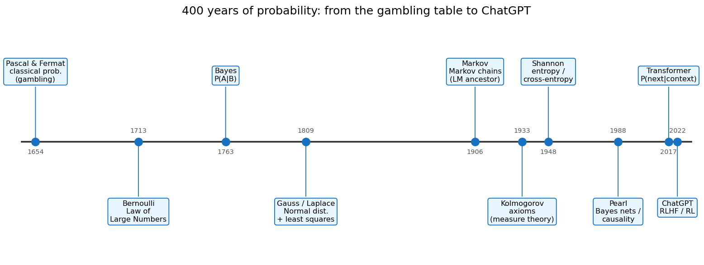
① 1654，赌桌：古典概率（Pascal & Fermat）。 起点很接地气：两个赌徒中途散场，赌注怎么分才公平？ Pascal 和 Fermat 通信解决了这个"分赌注问题"，定义了古典概率—— 等可能事件下，概率 = 有利结果数 / 总结果数。概率论生于赌博，不是生于课堂。
② 1713，从一次到无穷：大数定律（Bernoulli）。
雅各布·伯努利问：抛硬币次数越多，正面比例真的会趋近 1/2 吗？
大数定律给了"频率→概率"的桥。这是第 6 节 RL 里 pass@k 评估、
"采样足够多次取平均"之所以可靠的根基。
③ 1763，逆问题：贝叶斯定理（Bayes）。 前面都在算"已知原因，求结果的概率"。Bayes 反过来问： "看到了结果，怎么反推原因的概率？" 他原本想解决一个哲学问题：太阳天天升起，我们凭什么越来越相信它明天还会升起？ 答案就是 \(P(\text{原因}\mid\text{证据})\)——每多一天观测，就把信念更新一次。 这正是第 7.4 节"调试人生"里 Beta 后验做的事，也是"从数据中学习"最早的数学形式。
④ 1809，连续世界：正态分布登场（Gauss & Laplace）。 高斯不是凭空写下钟形曲线的——他是为了找回一颗丢失的小行星才逼出了它（详见第二部分的起源故事）。 他研究天文观测误差，导出那条曲线并配上最小二乘法；拉普拉斯用中心极限定理给了它普适解释。 从此连续、对称、误差类的随机量有了"默认分布"。为什么偏偏是它统治世界？下一部分专门回答。
④½ 1837，稀有事件：泊松分布（Poisson）。 高斯管的是"连续的误差"，但还有一类问题它管不了：单位时间内，稀有又独立的事件发生几次？ 泊松从"大量审判中的误判次数"出发推导出泊松分布，后来被用来精确拟合 "普鲁士军队每年被马踢死的人数"（第 7.2 节会展开这个经典例子）。 它专治计数类问题——和高斯分工明确。
⑤ 1906，给随机性装上"记忆"：马尔可夫链（Markov）。 马尔可夫提出："下一个状态只依赖当前状态"。他当年是拿俄语文本里的字母转移做的实验—— 这是语言模型最早的祖先。 n-gram、隐马尔可夫模型，一路到神经语言模型， 本质都在估计"给定上文，下一个符号的概率"。第 5 节会看到 Transformer 正是它的现代化身。
⑥ 1933，地基浇筑：公理化（Kolmogorov）。
在此之前概率论一直有点"民科"，靠直觉。柯尔莫哥洛夫用测度论把概率建立在三条公理上，
概率论才成为严格的现代数学。今天你写的每一个 softmax、每一次期望，背后都站着这套公理。
⑦ 1948，信息即概率：信息论（Shannon）。
香农用概率定义了信息熵 \(H=-\sum p\log p\)，以及交叉熵。
这一步直接连到第 4 节——大模型的损失函数 F.cross_entropy 就是香农 1948 年的发明。
训练模型"减少惊讶"，用的正是信息论的语言。
⑧ 1988，相关之上：贝叶斯网络与因果（Pearl）。 珀尔用有向无环图（DAG）把一堆条件概率组织成贝叶斯网络， 后来又开创因果推断，区分"相关"与"因果"。第 5 节会讲： 今天的大模型恰恰卡在他这套阶梯的最底层。
⑨ 2017 → 2022，集大成：Transformer 与 RLHF。 Transformer 把"给定上文预测下一个 token 的条件概率"做到极致（第 5 节）； RLHF/RL 用策略梯度让模型对齐人类偏好（第 6 节）。 ChatGPT 不是凭空出现的，它是这条 400 年概率长河的入海口。
🧭 一句话串联：赌桌（古典概率）→ 抛硬币（大数定律）→ 反推原因（贝叶斯）→ 误差曲线（高斯）→ 文本转移（马尔可夫）→ 公理化（柯尔莫哥洛夫）→ 惊讶度（香农熵）→ 因果图（珀尔）→ 下一个 token（Transformer）→ 自我提升（RL）。 每一段，下面都有一段能跑的 PyTorch 代码与之对应。
第二部分 · 为什么偏偏是高斯分布唱主角？
学概率时一个常见困惑：分布那么多——均匀、泊松、指数、伯努利、幂律…… 为什么教科书和工程实践里，正态（高斯）分布的戏份远超其他？ 先讲它"为什么会被发明出来"的真实故事，再讲四个让它统治世界的理由。
起源故事：高斯为了"找回一颗丢失的小行星"而发明了正态分布
1801 年元旦，天文学家皮亚齐发现了矮行星谷神星 (Ceres)，但只观测了 40 天， 它就转到太阳背后、丢了。全欧洲的天文学家都在问：它会从哪里重新出现？ 观测数据少且每一条都带误差，怎么从一堆有噪声的点里推断出真实轨道？
24 岁的高斯这样反推： "如果对同一个量做多次带误差的测量，那么大家公认最靠谱的估计是'算术平均值'。 那么，误差应该服从什么分布，才能让'算术平均'恰好成为最可能的真值？" 他从这个要求倒推，唯一的答案就是那条钟形曲线 \(e^{-x^2/2\sigma^2}\)——正态分布。 配上由此自然导出的最小二乘法，高斯算出了谷神星的轨道。 当年年底，天文学家果然在他预测的位置重新找到了谷神星。一战成名。
注意这个逻辑的方向：不是先有正态分布，再去拟合误差； 而是先要求"平均值最优"，反推出误差必然是正态。 这跟第 4 节"最小化交叉熵 = 最大似然"是同一种思维—— 从'什么估计最合理'出发，反推'背后是什么概率模型'。 这就是高斯的诞生。
明白了它的来历，再看它统治世界的四个理由：
理由一：中心极限定理——"大量微小因素之和"必然是高斯
这是最深刻的理由。中心极限定理 (CLT)：无论原始变量服从什么分布， 只要把足够多个独立随机量加起来（或取平均），结果的分布都会趋近正态。
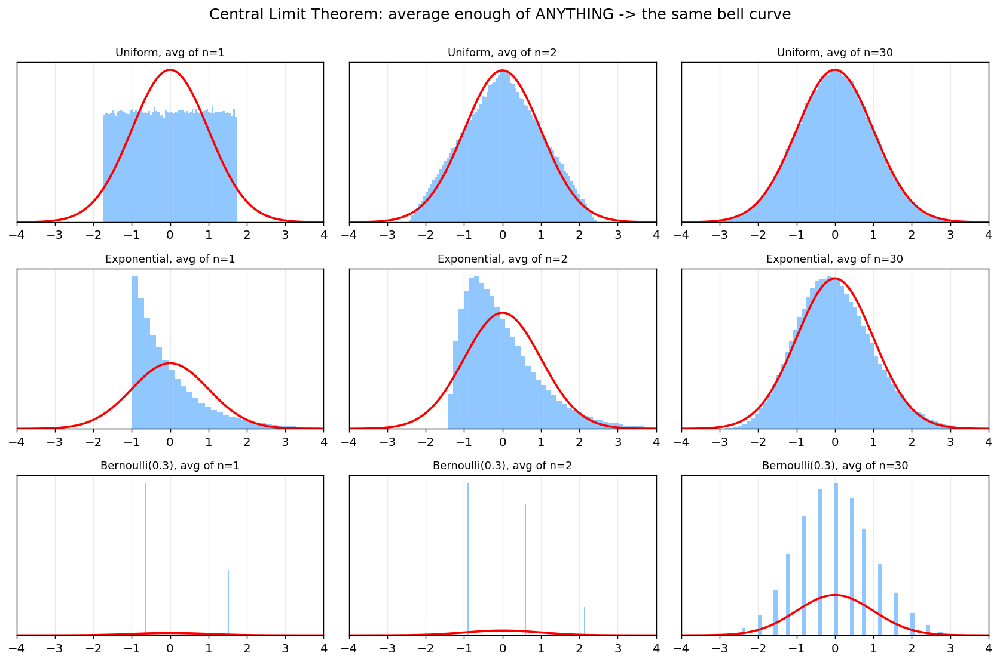
上图三行用了三种完全不同的源分布（均匀、指数、伯努利）， 每行从左到右是"对 n 个样本取平均"：n=1 时奇形怪状，n=30 时全部收敛到同一条红色钟形曲线。
现实世界里，一个量往往是无数微小独立因素叠加的结果： 身高（成千上万个基因 + 营养 + ……）、测量误差、股价波动、神经元输入之和…… 它们"天然就是高斯的"，不是人为假设，而是 CLT 的必然结论。 这就是高斯无处不在的根本原因。
理由二：最大熵——"承认自己只知道均值和方差"时最诚实的选择
信息论给了第二个理由（呼应第 7 节香农）： 在只知道一个分布的均值和方差、其余一无所知的前提下，正态分布是熵最大的分布。
"熵最大"意味着"假设最少、最不自作主张"。 所以当你对一个连续量只有"中心在哪、波动多大"的信息时， 假设它是高斯，是最不引入额外偏见的选择。 这让高斯成为默认的、最保守的建模起点。
理由三：数学上太好用——自共轭、线性封闭、解析可解
- 两个高斯相加还是高斯；高斯做线性变换还是高斯。
- 高斯的共轭先验还是高斯——贝叶斯更新有闭式解，不用数值积分。
- 只需均值 + 协方差两个量就完全确定，最优估计退化成熟悉的最小二乘（高斯 1809 的原配）。
工程上，"能算出解析解"往往压倒一切，这让高斯成为算法设计的宠儿。
理由四：在深度学习里，高斯其实无处不在
回到本项目这类大模型，高斯藏在很多地方：
- 权重初始化：Xavier / Kaiming 初始化都是从高斯（或其变体）采样，让信号方差逐层稳定。
- 梯度噪声：SGD 的小批量梯度噪声近似高斯（又是 CLT），这是理解优化的关键。
- 扩散模型：整个生成范式就是"逐步加高斯噪声再学着去噪"。
- VAE / 隐变量：隐空间先验通常设为标准正态。
⚠️ 但要诚实：大模型的"输出"恰恰不是高斯！ 语言模型预测下一个 token，用的是离散的类别分布（categorical / 多项式分布）—— 也就是第 1 节的
softmax，而非高斯。词频还服从幂律/长尾（Zipf 定律）， 这也是第 3 节要用top-k砍长尾的原因。 所以正确的认知是：高斯统治"连续、对称、多因素叠加"的世界（参数、噪声、误差）， 而离散选择的世界由 categorical 分布统治。选对分布，是概率建模的第一步功夫。🔑 概率思维落地 #0：看到一个量，先问"它是怎么生成的？" 是"很多小因素叠加"（→ 高斯）？是"单位时间随机计数"（→ 泊松，第 7 节）？ 还是"从有限选项里挑一个"（→ categorical，第 1 节）？ 建模选错分布，后面再精巧的计算都是错的。
第三部分 · 代码：七层拆透大模型里的概率论
0. 一个被忽略的真相：神经网络的输出从来不是答案，是分布
先记住一句话，它是后面所有内容的地基：
语言模型每走一步，吐出来的不是"下一个字"，而是"整个词表上的一个概率分布"。
在本项目里，模型最后一层就是把隐藏向量投影成 vocab_size 个数（叫 logits）：
# nanochat/gpt.py (forward)
logits = self.lm_head(x) # (B, T, vocab_size) 每个 token 一个分数
logits = logits[..., :self.config.vocab_size]
logits = logits.float()
softcap = 15
logits = softcap * torch.tanh(logits / softcap) # 把 logits 平滑压到 [-15, 15]
注意：这时候 logits 还只是一堆任意实数，可能是 8.0, 6.5, -3.2, ...。
它不是概率——没有非负、不归一、加起来也不等于 1。
把它变成概率，只需要一个函数：softmax。这就是第一层。
1. softmax：把任意数字变成"概率"
概率分布必须满足两条：每一项 ≥ 0，所有项加起来 = 1。
softmax 用一招同时搞定：先 exp（保证为正），再除以总和（保证归一）：
本项目里它就藏在采样函数里：
# nanochat/engine.py sample_next_token()
probs = F.softmax(vals, dim=-1) # logits -> 概率分布
choice = torch.multinomial(probs, num_samples=1, generator=rng) # 按概率抽一个
这两行就是大模型"写字"的核心：
softmax 把分数变成概率，multinomial 按这个概率掷一次骰子。
大学里 softmax 通常只在"逻辑回归"那一节露个脸，老师不会告诉你： 你每天用的 ChatGPT，每吐一个字，背后都在做一次 softmax + 掷骰子。
1.1 为什么偏偏是 softmax，而不是别的归一化？
一个自然的质疑：把一堆数变成"非负、和为 1"的方法多得是，为什么非得用 exp？
直接 z_i / Σz_j 不行吗？把负数砍成 0 再归一不行吗？看一眼对比就明白了：
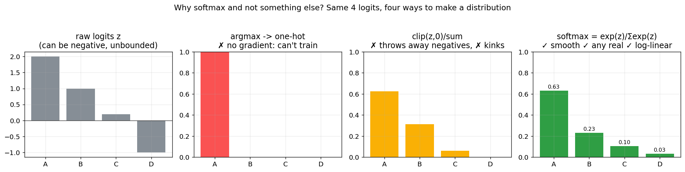
- argmax（直接选最大）：得到 one-hot，干脆利落，但它是阶梯函数、几乎处处导数为 0。 神经网络靠梯度学习，没有梯度就没法训练——这条死路直接出局。
clip(z,0)/Σ（砍掉负数再归一）：logits 本来可以是任意实数，负数也携带信息 （"这个 token 很不可能"）。一刀砍成 0，信息丢了；而且 0 处有折角，梯度不光滑。- softmax（
exp再归一）：exp把任意实数（含负数）平滑地映射到正数， 曲线处处可导、梯度漂亮，还独享一个杀手级性质——对数线性。
那个"对数线性"才是 softmax 真正不可替代的原因：
两个选项的对数概率之差，恰好等于它们 logits 之差。 这意味着神经网络只要去线性地调整 logits，
就能精确控制概率的比值（几率/odds）。配上交叉熵损失（第 4 节），
梯度还会化简成一个极其干净的形式 预测概率 − 真实标签——这是 softmax 能和反向传播完美配合的根本。
它的来历：其实是 1870 年代物理学的"玻尔兹曼分布"
softmax 不是深度学习发明的。它的本体是统计物理里的 玻尔兹曼/吉布斯分布： 一个系统处于能量为 \(E_i\) 的状态的概率正比于 \(e^{-E_i/kT}\)。 把"能量"换成"负 logit"、把 \(kT\) 换成温度，就是一模一样的式子。
这正是第 2 节那个 temperature 名字的来历——它真的来自热力学的温度！
高温时各状态概率拉平（系统混乱、随机），低温时集中到最低能量态（系统笃定、有序）。
所以当你调大模型的 temperature 时，你其实在借用一个 150 年前的物理概念。
而从信息论看（第二部分理由二），softmax 还是给定 logits 均值约束下熵最大的分布——
物理、信息论、深度学习，在这里指向同一个 exp。
🔑 概率思维落地 #1：softmax 不只是公式，它是"把直觉打分变成可比较的概率"的通用工具。 你给三家公司 offer 打分
8 / 6.5 / 5？做个 softmax，你就知道"如果让你随机选，你有多大概率去第一家"。 分差越大越笃定，分差越小越纠结——而这个"纠结程度"，下一节就能量化。
2. temperature：同一个分布，不同的"自信程度"
注意上面代码里有一行 vals = vals / temperature。这个 temperature（温度）
是理解概率分布"形状"的最好教具。它不改变谁排第一，只改变分布有多尖：
# nanochat/engine.py
if temperature == 0.0:
return torch.argmax(logits, dim=-1, keepdim=True) # T=0：永远选最大，完全确定
...
vals = vals / temperature # T<1 放大差距(更自信)，T>1 抹平差距(更随机)
probs = F.softmax(vals, dim=-1)
同样的 logits [8.0, 6.5, 5.0, ...]，在不同温度下变成完全不同的分布：
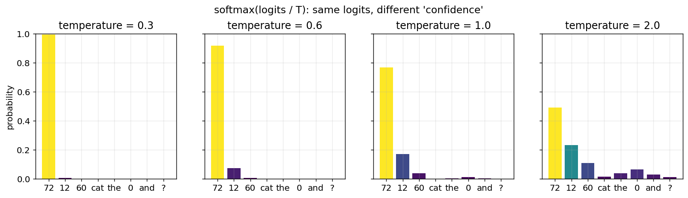
- T=0.3：几乎 100% 选 "72"，模型"斩钉截铁"。
- T=1.0：第一名约 77%，但偶尔会选别的，有了"创造性"。
- T=2.0：分布被抹平，第一名只剩 ~49%，模型开始"胡言乱语"。
本项目推理默认 temperature=0.6（见 README 参数表）——
比 1 略冷，保证数学题答案稳定，又不至于死板。
🔑 概率思维落地 #2：temperature 就是"我有多确定"的旋钮。 做选择时，"高温"是头脑风暴（多探索几个方案），"低温"是拍板执行（选最优）。 调试模型答非所问时，第一反应应该是：温度是不是太高了？
3. top-k：砍掉概率分布的长尾
词表有三万多个 token，softmax 之后，绝大多数 token 都有一点点（非零的）概率。 如果完全按这个分布抽样，偶尔会抽到一个排名第 8000、概率 0.0001 的"垃圾词"， 答案就崩了。top-k 采样：只保留概率最高的 k 个，其余全部置零再重新归一化。
# nanochat/engine.py sample_next_token()
if top_k is not None and top_k > 0:
k = min(top_k, logits.size(-1))
vals, idx = torch.topk(logits, k, dim=-1) # 只留前 k 名
vals = vals / temperature
probs = F.softmax(vals, dim=-1) # 在这 k 个里重新分配 100% 概率
choice = torch.multinomial(probs, num_samples=1, generator=rng)
return idx.gather(1, choice)
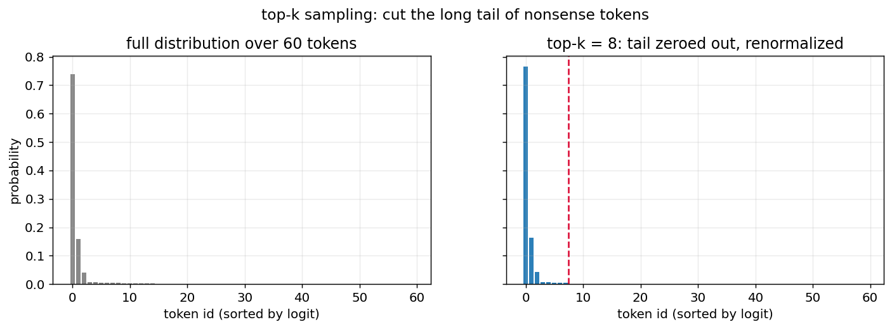
左边是完整分布（长尾里全是噪声），右边是 top-k=8 之后：红线右边的尾巴被一刀切掉，
概率质量重新集中到靠谱的候选上。本项目默认 top_k=50。
🔑 概率思维落地 #3：top-k 是"只在靠谱的选项里随机"。 选餐厅别在全城 5000 家里随机，先按评分取 top 10，再随便挑一家—— 既保留惊喜，又避免踩雷。这就是 top-k 的人生版。
4. 交叉熵：损失函数其实就是"惊讶程度"
前面讲的是"模型怎么用概率生成"。现在反过来问：模型怎么学？
预训练的目标只有一句话：让正确的下一个字，获得尽可能高的概率。 怎么把"概率高不高"变成一个能优化的数字？答案是交叉熵 = 负对数似然：
本项目里就是一行：
# nanochat/gpt.py forward()
loss = F.cross_entropy(
logits.view(-1, logits.size(-1)),
targets.view(-1),
ignore_index=-1, # -1 的位置不计损失（比如 prompt 部分）
reduction=loss_reduction,
)
为什么是 -log(p)？看这条曲线就懂了：
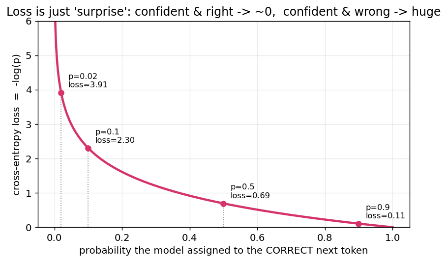
- 模型给正确答案
p=0.9→ loss ≈ 0.1（"我早就知道"，几乎不惊讶，几乎不罚） - 给
p=0.5→ loss ≈ 0.69（"半信半疑"） - 给
p=0.02→ loss ≈ 3.9（"竟然是这个？！"，巨大的惊讶，巨大的惩罚）
训练，就是不断减少模型对真实世界的"惊讶程度"。 这就是为什么交叉熵也叫"困惑度"（perplexity）的来源——困惑越少，模型越懂世界。
大学里"最大似然估计 (MLE)"和"交叉熵"是两章分开讲的， 你可能从没意识到：最小化交叉熵 ≡ 最大化似然 ≡ 让训练数据在模型眼里最不意外。 三个名字，一件事。
易混淆澄清：交叉熵 vs 交叉验证——名字像，思想毫不相干
很多人被这两个词坑过：中文都带"交叉"、英文都带"cross"，但它们是两个完全不同维度的东西。 一句话分清：交叉熵是个"损失函数"（衡量预测分布有多偏离真实分布）， 交叉验证是套"评估流程"（衡量模型在没见过的数据上能不能扛得住）。 一个在训练内部算每一步误差，一个在训练外部包一层来估计泛化能力。
| 维度 | 交叉熵 Cross-Entropy | 交叉验证 Cross-Validation |
|---|---|---|
| 出身 | 信息论（Shannon 1948，源自玻尔兹曼熵） | 统计方法论（Stone & Geisser 1974） |
| 本体 | 一个数：\(H(p,q)=-\sum p\log q\) | 一套实验协议：切分数据、轮流留出 |
| "交叉"指什么 | 两个分布交叉：真实分布 \(p\) × 模型分布 \(q\) | 数据子集交叉：训练集 ↔ 验证集 轮换 (cross-over) |
| 作用层级 | 训练内部，逐样本的优化目标 | 训练外部，把整个训练过程包起来评估 |
| 解决什么 | "这次预测错得多离谱？" | "是真学会了，还是只背了训练集？（过拟合）" |
| 本项目对应 | gpt.py 的 F.cross_entropy（损失） |
train_rl.py 的 train/test 切分 + val_task 上的 pass@k |
两个"交叉"指的根本不是一回事：
- 交叉熵的"交叉"＝拿一个分布去度量另一个分布。你用模型以为的 \(q\) 去编码真实的 \(p\)， 多付的编码代价就是交叉熵；它和 KL 散度同源：\(H(p,q)=H(p)+D_{KL}(p\,\|\,q)\)。交叉的是"真实 vs 预测"两个分布。
- 交叉验证的"交叉"＝数据角色轮流互换 (crossover)。把数据切成 k 折，每份轮流当一次验证集、其余当训练集。交叉的是"训练 vs 验证"两批数据。
它俩正交，还经常一起用：用交叉熵当损失去训练（往哪走），同时用交叉验证挑超参、判断是否过拟合（走得对不对）。
⚠️ 补一个现实细节：大模型几乎不用严格的 k 折交叉验证——重训 k 遍太贵，退化成单次留出验证 (holdout)： 固定切 train / val / test。本项目正是如此——GSM8K 用
train训练、test评估pass@k，这是交叉验证思想最朴素的版本。🔑 概率思维落地 #4：用"惊讶程度"评估你的判断质量。 你预测某事 90% 会发生，结果没发生 → 你应该非常惊讶，并大幅修正认知（大 loss）。 你说 50% → 无论结果如何都别太得意（中等 loss）。 一个好的预测者，是长期"惊讶总量"最小的人。 这正是 cross-entropy 在做的事。
5. 条件概率 → 贝叶斯网络 → 因果推断：Transformer 站在阶梯哪一级
现在我们触到了那张被反复念叨、却从没真正"用过"的公式：条件概率 \(P(A\mid B)\)。 这一节会从它出发，一路爬到贝叶斯网络、再到因果推断—— 并回答一个尖锐的问题：为什么再大的大模型，也会一本正经地胡说八道？
大学里它是个抽奖、摸球的玩具。但在大模型里，它是全部。 一句话的概率，被链式法则拆成一连串条件概率的乘积：
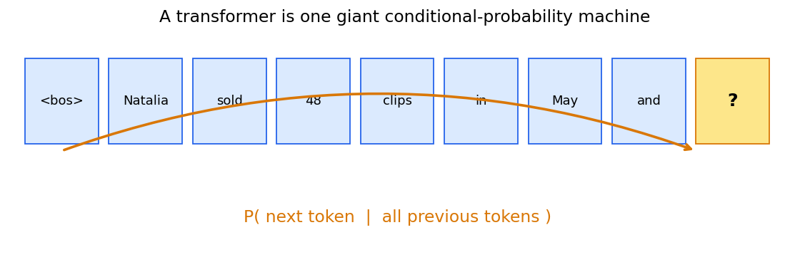
模型每一步算的，就是 "给定前面所有字，下一个字是什么" 的条件分布。 在代码里，这个"给定前面所有字"是靠 KV Cache 实现的—— 它把"历史"（条件 \(B\)）缓存下来，新 token 只需在这个条件下计算：
# nanochat/engine.py generate()
# 把已经算过的 K/V（也就是"条件"，前文上下文）缓存起来
logits = self.model.forward(ids, kv_cache=kv_cache_decode)[:, -1, :]
# 在"给定前文"的条件下，对下一个 token 采样
next_ids = sample_next_token(logits, rng, temperature, top_k)
[:, -1, :] 这个切片很关键：我们只取最后一个位置的 logits，
因为我们要的就是 \(P(\text{next}\mid \text{前面全部})\)。
这就是"GPT"里的 G（Generative）和 P（Pre-trained）背后的概率内核。 你大学里背的链式法则 \(P(ABC)=P(A)P(B\mid A)P(C\mid AB)\)， 正是 ChatGPT 写出每一句话的方式。
条件概率，还藏在工具调用里
本项目的模型会算数学题时调用计算器，这本身就是一个条件概率的状态机：
当模型采样出 <|python_start|>，后续 token 的分布就被"条件化"到了写表达式的模式：
# nanochat/engine.py generate() —— 工具调用状态机
if next_token == python_start:
state.in_python_block = True # 进入"写代码"的条件
elif next_token == python_end and state.in_python_block:
expr = self.tokenizer.decode(state.python_expr_tokens)
result = use_calculator(expr) # 算出真实结果
if result is not None:
state.forced_tokens.append(output_start)
state.forced_tokens.extend(self.tokenizer.encode(str(result)))
state.forced_tokens.append(output_end) # 强制把结果"喂"回上下文
被 use_calculator 算出的真实结果会作为新的条件注入上下文，
后面所有 token 都在"已知 12×6=72"的条件下生成——
这就是检索增强 (RAG)、工具调用的概率本质：不断给条件概率添加新的、可靠的条件。
5.1 往上一层：贝叶斯网络——把"一堆条件概率"组织成一张图
链式法则 \(P(w_1\cdots w_n)=\prod_t P(w_t\mid w_{<t})\) 有个麻烦： 条件越来越长，联合分布的参数量是指数爆炸的。 如果什么都依赖什么，根本算不动。
珀尔 1988 年的解法是贝叶斯网络：用一张有向无环图 (DAG) 画出"谁直接依赖谁"， 没有连线就代表条件独立，于是巨大的联合分布被分解成一串"小条件概率"的乘积。
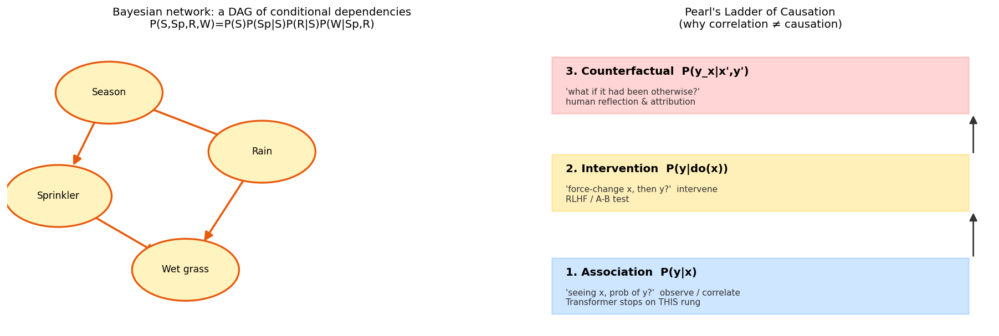
左图是经典例子：季节影响"是否开洒水器"和"是否下雨"，两者又共同决定"草地是否湿"。 原本要描述 4 个变量的联合分布，借助这张图只需几个局部条件概率：
这正是 Transformer 在做的事的"显式版本"： 注意力机制可以看作模型在自动学习 token 之间"谁依赖谁"的稀疏图结构—— 贝叶斯网络是人手画依赖图，Transformer 是用数据把这张图学出来。两者同源。
贝叶斯网络也让"贝叶斯定理"真正活了起来：观测到"草地湿了"， 可以反向推断"多半是下雨了还是开了洒水器"——这就是 \(P(\text{原因}\mid\text{证据})\)， 诊断、归因、推理，全靠它。
5.2 再往上：因果推断——为什么"相关"喂不出"因果"
但贝叶斯网络（以及 Transformer）有个天花板。珀尔提出了著名的因果阶梯（上图右）：
| 层级 | 问的问题 | 数学 | 谁在这一层 |
|---|---|---|---|
| ① 关联 | "看到 X，Y 的概率？" | \(P(Y\mid X)\) | 大模型停在这里 |
| ② 干预 | "我强行改变 X，Y 会怎样？" | \(P(Y\mid do(X))\) | A/B 实验、RLHF |
| ③ 反事实 | "如果当初没那样，结果会不同吗？" | \(P(Y_x\mid X',Y')\) | 人类的反思、追责 |
关键在第①和第②层的鸿沟。经典例子："冰淇淋销量"和"溺水人数"高度相关—— 但不是冰淇淋导致溺水，而是"夏天"这个共同原因。 只看 \(P(Y\mid X)\) 的模型会学到这种伪相关，而 \(P(Y\mid do(X))\)（真去禁售冰淇淋）才能区分真假因果。
🧨 这解释了大模型为什么会"幻觉"：Transformer 训练目标 \(P(\text{next}\mid\text{context})\) 纯粹是第①层的关联。它学的是"这些词经常一起出现"，而非"谁导致谁"。 所以它能流畅地把常见搭配缝在一起，却可能缝出一个事实上错误、因果上荒谬的句子。 大模型的"一本正经胡说八道"，本质是停留在因果阶梯最底层的必然代价。
那本项目的 RL（第 6 节）是什么？它正是往第②层"干预"爬的一小步： 不再被动模仿语料，而是主动采样、真去验证答案对错、再据此调整概率—— 这已经带有"干预并观察后果"的因果味道。这也是为什么 RLHF/RL 对"让模型更可靠"如此关键。
5.3 概率图模型 (PGM)：贝叶斯网络只是这张大地图的一角
退一步看全景：贝叶斯网络属于一个更大的家族——概率图模型 (Probabilistic Graphical Models)。 一句话定义：用"图"来表示一堆随机变量之间的依赖关系，从而把庞大的联合分布拆成可计算的小块。 按"图怎么画"，它分成几支，而本文前面出现的概念几乎都能在这张地图上找到坐标：
| 概率图模型 | 图的形式 | 表示什么 | 本文/本项目里的对应 |
|---|---|---|---|
| 贝叶斯网络 | 有向无环图 | 因果/生成方向的条件依赖 | 5.1 节、注意力学到的依赖 |
| 马尔可夫随机场 / CRF | 无向图 | 对称的相互影响（无方向） | 图像分割、序列标注 |
| 马尔可夫链 / HMM | 链式展开 | 时序：下一状态依赖当前 | 历史第⑤步，n-gram 语言模型 |
| Transformer | 学出来的动态全连接图 | 每个 token 对其他 token 的注意力权重 | 本项目 gpt.py 的注意力 |
所以"GPT 是什么"可以有个更本质的回答： 它是一个把依赖图从'人手画'升级为'用数据自动学'的概率图模型。 马尔可夫链假设"只看前一个词"（一阶依赖），n-gram 看前 n 个， 而 Transformer 的注意力让每个位置自己决定该依赖前文的哪些词、依赖多重—— 这张图不再是固定的，而是随输入动态生成的。这就是它碾压前辈的根本原因。
概率图模型给了我们一副统一的眼镜：马尔可夫链、HMM、贝叶斯网络、CRF、乃至 Transformer， 都是"在图上做概率推断"。 你大学里割裂学的这些章节，其实是同一棵树上的不同枝杈。
🔑 概率思维落地 #5（这条最值钱）：条件概率是"新信息如何改变你的判断"。 - "这个项目能成吗？" → 无条件，瞎猜。 - "已知团队做过三个同类项目、且拿到了头部客户，这个项目能成吗？" → 条件概率，靠谱多了。
生活里每一条新信息，都是在给你的判断"加一个条件"。 学会问 "在已知 X 的条件下"，你就掌握了概率论里唯一真正改变命运的那个公式。
🪜 再往上一层（因果阶梯）：别停在"A 和 B 总一起出现"（关联）。 多问一句"如果我真去改变 A，B 会变吗？"（干预），以及"当初要是没做 A，结果会不同吗？"（反事实）。 "努力和成功相关" ≠ "努力导致成功"——分清这两者，你就比只会拟合相关性的大模型站高了两级。
6. 策略梯度：用"期望"教模型自我提升
最后一层，也是本项目的灵魂：强化学习 (RL)。这里概率论从"描述世界"升级为"改变世界"。
预训练让模型学会"像人一样说话"，但说得对不对，没人管。 RL 阶段，我们让模型对同一道数学题采样多个答案，对的奖励 1，错的奖励 0， 然后调整概率分布：让"答对的路径"概率上升，"答错的路径"概率下降。
# scripts/train_rl.py get_batch()
# 1) 对同一道题采样 num_samples 个答案（每个都是一次随机游走）
seqs_batch, _ = engine.generate_batch(tokens, num_samples=args.device_batch_size,
temperature=args.temperature, top_k=args.top_k, ...)
# 2) 给每个答案打分：对=1.0, 错=0.0
rewards = [train_task.reward(conversation, tokenizer.decode(s[prefix_length:]))
for s in generated_seqs]
# 3) 优势 = 奖励 - 平均奖励（这一步是 REINFORCE 的精髓）
rewards = torch.tensor(rewards, dtype=torch.float, device=device)
advantages = rewards - rewards.mean()
为什么要减去平均值 rewards.mean()？这就是大学里期望 \(E[X]\) 真正的用武之地：
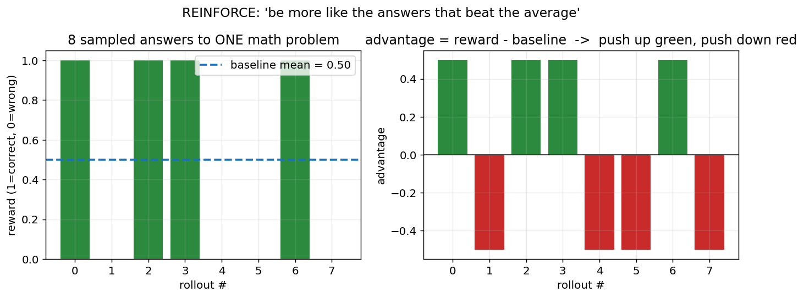
把平均奖励当作"基准线 (baseline)"，比平均好的答案优势为正（往上推），比平均差的为负（往下压）。 这正是"相对于期望的偏离"——你大学里学的方差、期望，在这里变成了"教模型变聪明"的方向盘。
更新的目标函数，就是大学概率论里那个 \(E[f(X)]\) 的策略梯度版：
# scripts/train_rl.py 训练循环
# 策略梯度目标：最大化 E[logp * advantage]
logp = -model(inputs, targets, loss_reduction='none').view_as(inputs) # 每个 token 的对数概率
pg_obj = (logp * advantages.unsqueeze(-1)).sum()
loss = -pg_obj
loss.backward()
一行 logp * advantage 就讲完了 REINFORCE：
正确答案里的每个字，提高它的概率；错误答案里的每个字，降低它的概率； 提高/降低的力度，正比于这个答案比平均"好/坏"多少。
这是一个干净的 REINFORCE 实现（见 README 的 RL 原理）， 无 KL 正则、无 PPO clipping。整个"大模型对齐"的魔法，剥到底层， 就是大学概率论里的期望、采样、对数似然这三件套。
🔑 概率思维落地 #6：期望思维 = "不看单次结果，看长期平均"。 一次决策的好坏别用单次结果判断（你可能只是运气好/坏）， 要问"这个策略重复 1000 次，期望收益是正还是负？"。 减 baseline 的智慧是：别和绝对值较劲，和'平均水平'比——这才是进步的方向。
7. 落地三连：debug 大模型 / 预测微信流量 / 生活概率思维
学概率，"用到生活中形成映射反应，才不会被忘掉"。下面把上面六层接回真实世界。
7.1 如何 debug 一个 Transformer：把概率画出来
模型答错了，怎么 debug？传统程序你能打断点看变量，但 Transformer 是概率机器， 最有效的调试手段是把"概率分布"可视化出来。 几个实战招式：
① 画 per-token 熵 (entropy)，找到模型"心虚"的地方。 熵 \(H=-\sum p\log p\) 衡量分布有多"散"。熵高 = 模型很不确定（容易出错的决策点）； 熵≈0 = 模型很笃定（或是被强制注入的工具结果）。
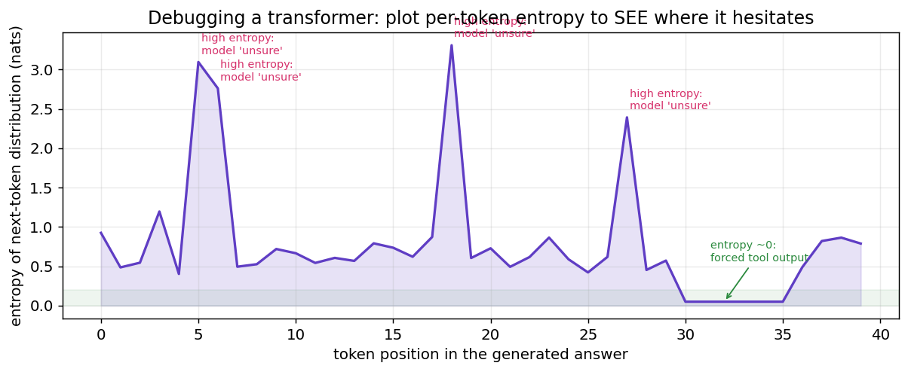
# 调试片段：在 engine.generate 的采样处加几行，记录每步分布的熵
import torch.nn.functional as F
probs = F.softmax(logits / temperature, dim=-1)
entropy = -(probs * probs.clamp_min(1e-9).log()).sum(-1) # 每个 token 的熵
# 把 entropy 存下来画成上面那张图：尖峰处就是模型"拿不准"的关键决策点
熵的尖峰，往往就是模型推理链断裂、答案开始跑偏的地方——先去看那里。
② 对比 temperature 扫描。 答案不稳定？把 temperature 从 0 扫到 1.5，
看答案在什么温度下开始崩——崩得早说明模型对这道题本就没把握（见第 2 节）。
③ 看 top-k 候选词。 把每步的 torch.topk(logits, 5) 打印出来，
如果正确答案根本不在前 5，说明问题在模型能力/训练，而不是采样策略。
④ 用 pass@k 量化"运气成分"。 本项目评估时正是这么做的：
# scripts/train_rl.py —— pass@k：采样 k 次，至少对一次的比例
for k in range(1, args.device_batch_size + 1):
passk[k-1] = sum(any(o["is_correct"] for o in r["outcomes"][:k]) for r in records)
pass@1 低但 pass@8 高 → 模型其实"会做"，只是采样没采到（调采样/RL 能救）；
pass@8 也低 → 模型是真不会（得加训练数据/调模型）。这是一条极其重要的诊断分界线。
7.2 预测微信群流量：泊松分布
"预测微信流量泊松分布"——这是把概率论用回生活最漂亮的例子。
泊松分布专门描述"单位时间内，独立随机事件发生的次数"： 群消息数、客服来电数、网站请求数、地铁站到人数……都近似泊松。
泊松为什么会来？——它是"二项分布的稀有极限"
要理解泊松"为什么长这样"，得知道它从哪来。抛 \(n\) 次硬币、每次正面概率 \(p\)， 正面次数服从二项分布。但很多真实问题是：\(n\) 极大、\(p\) 极小，而平均次数 \(\lambda=np\) 不大。 比如"这一小时内会来几条消息"——可以看成"这一小时被切成无数个极短瞬间 (\(n\to\infty\))， 每个瞬间来消息的概率极小 (\(p\to 0\))"。对二项分布取这个极限， 公式里那个看着突兀的 \(e^{-\lambda}\) 和 \(k!\) 就自然浮现出来：
所以泊松又叫"稀有事件定律 (law of rare events)"—— 它就是为"大量机会、每次都极不可能、但偶尔发生"这类问题量身定做的。
最经典的例子：普鲁士军队"被马踢死"的人数
1898 年，统计学家 Bortkiewicz 拿了一份奇特的数据： 普鲁士 14 个骑兵军、20 年间、每个军每年被战马踢死的士兵数（共 280 个"军-年"）。 被马踢死，正是典型的"稀有 + 独立"事件。他用泊松分布去拟合，结果好得惊人：
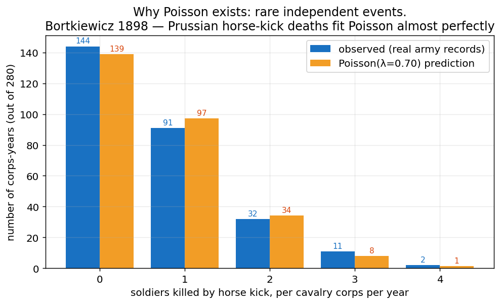
蓝色是真实记录，橙色是 \(\lambda=0.70\)（就等于样本均值）的泊松预测——几乎完全重合。 一个为赌博和审判推导出来的公式，精准预言了战马踢死士兵的人数。 这就是为什么泊松分布让人着迷：完全不相干的稀有事件，背后是同一个数学骨架。
\(\lambda\) 是"平均每小时几条消息"。下图是不同活跃度的群的消息分布：
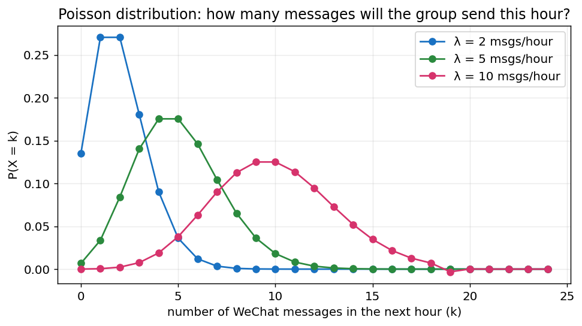
这就是"概率编程"最朴素的样子——几行代码就能拟合并预测：
import numpy as np
from scipy import stats
# 过去 7 天，每小时的微信群消息数（你的真实数据）
counts = np.array([3, 5, 2, 8, 6, 4, 7, 5, 9, 1, 4, 6, ...])
lam = counts.mean() # 最大似然估计：λ̂ 就是样本均值
print(f"平均每小时 {lam:.1f} 条")
# 预测：下一个小时消息数 ≥ 10 的概率（该不该开免打扰？）
p_busy = 1 - stats.poisson.cdf(9, lam)
print(f"下一小时爆群(≥10条)的概率：{p_busy:.1%}")
注意 lam = counts.mean()——泊松的 λ 的最大似然估计就是样本均值，
和第 4 节"交叉熵 ≡ 最大似然"是同一套思想。概率论的内核，到处都在复用。
更进一步，用概率编程框架（如 PyMC）还能做贝叶斯估计， 不仅给出 λ 的点估计，还给出"我对这个 λ 有多确定"的整条后验分布—— 这又回到了第 5 节的条件概率：用观测数据，把先验更新成后验。
7.3 生活中处处的概率思维
把这篇文章的六层，翻译成日常决策的反射动作：
| 概率概念 | 代码里 | 生活里的"映射反应" |
|---|---|---|
| 高斯 / CLT | 权重初始化、梯度噪声 | "很多小因素叠加"的量默认钟形：身高、误差、波动 |
| softmax | logits → 概率 | 把模糊的"打分/好感"变成可比较的概率 |
| temperature | 控制分布尖锐度 | 探索期调高温（多试），执行期调低温（拍板） |
| top-k | 砍掉长尾 | 只在靠谱的少数选项里随机，别在全集里碰运气 |
| 交叉熵 / 似然 | -log(p) |
做长期"惊讶最小"的预测者，错了就大幅修正 |
| 条件概率 / 贝叶斯 | KV Cache / 工具调用 | 永远问"在已知 X 的条件下"，让新证据更新判断 |
| 贝叶斯网络 / PGM | 注意力的依赖结构 | 画清"谁直接影响谁"，别把链条上的远亲当直接原因 |
| 因果阶梯 | RL 的"采样—验证—调整" | 区分相关 / 干预 / 反事实："真去改 A，B 会变吗？" |
| 贝叶斯信念 (Beta) | RL 多 rollout 采样 | 把"我相信 A 能成"量化成后验，按结果更新、按信念下注 |
| 探索 vs 利用 | temperature / top-k | 突破难题：信念高的多试，也留一点随机探索黑马 |
| 期望 / 优势 | reward - mean |
看长期期望而非单次结果，和平均水平比 |
| 泊松 | λ = mean |
预测"单位时间内随机事件次数"：排队、消息、故障 |
"条件概率就很有用"——这句大白话其实是整个概率论里最实用的一句。 贝叶斯定理 \(P(A\mid B)=\dfrac{P(B\mid A)P(A)}{P(B)}\) 不是用来考试的， 它是你每次"看到新证据、更新旧看法"时，大脑本该执行的运算。 医生看到化验单更新诊断、投资人看到财报更新估值、你看到对方已读不回更新心情—— 全是条件概率。
7.4 用贝叶斯信念调试人生：程序员的 jim0 → jim1 → … → jimn
贝叶斯信念网络听起来很学术，但每个程序员每天都在用它，只是没意识到。 想想你死磕一个难 bug 的过程：
你有一个能跑的基线版本
jim0（committed，✓）。 你相信"方向 A 能解决问题"，相信度大概 0.6，于是基于 jim0 改出jim1去试。 失败。你没有放弃，因为信念还没崩，又改出jim2——又失败。 两次失败后，你对方向 A 的信念从 0.6 掉到了 0.35，于是git reset退回 jim0， 转去试方向 B。jim1'也失败，但jim2'出现了转机，信念升到 0.55， 顺着改出jim3——突破了。
这整个过程，就是一棵贝叶斯搜索树：
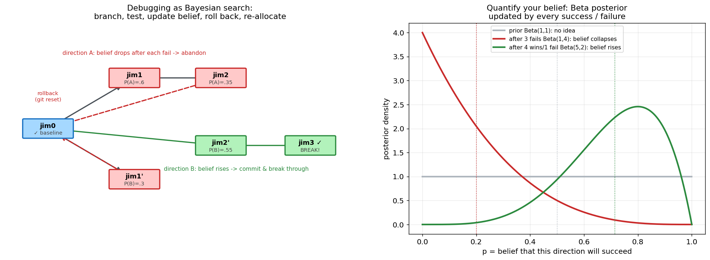
左图是版本树：每个节点是一次尝试，绿色成功、红色失败、虚线是回滚 (rollback)。 右图回答了那个最关键的问题——"你相信 A 方向能成功，相信度到底是多少？" 答案可以被精确量化：把"方向 A 的成功率"建模成一个 Beta 分布（贝叶斯里描述"概率的概率"的标准工具）：
- 一开始什么都不知道 → 先验
Beta(1,1)，平的，相信度均值 0.5； - 失败 3 次 → 后验
Beta(1,4)，整条曲线塌向 0，相信度均值跌到 0.2（该撤了）； - 成功 4 次失败 1 次 → 后验
Beta(5,2)，曲线涌向右侧，相信度均值升到 0.71（该加注）。
# 把"对某个方向的信念"写成几行概率编程
from scipy.stats import beta
alpha, beta_ = 1, 1 # 先验：毫无信息
for outcome in attempts: # 每次尝试的结果
if outcome == "success": alpha += 1 # 成功 -> 信念右移
else: beta_ += 1 # 失败 -> 信念左移
belief = alpha / (alpha + beta_) # 当前对"这个方向能成"的相信度
# 决策：belief 跌破阈值就 rollback 换方向，够高就 all-in
这正是第 6 节 RL 里 advantage = reward - mean 的人生版——
用结果不断更新信念，把注意力（和时间）重新分配到信念更高的分支上。
那么，怎么才能突破一个很难的问题？
难题之所以难，是因为没有任何一个方向的成功信念压倒性地高。 概率思维给的不是"更努力"，而是一套探索 vs. 利用 (explore-exploit) 的策略：
- 维护多个方向的信念分布，而不是一条道走到黑（别把全部时间沉没到信念已塌的方向 A）。
- 按信念分配尝试次数（Thompson 采样的思想）：从每个方向的 Beta 分布里各抽一个样，
谁抽得高就试谁——信念高的多试，但信念低的也偶尔给机会，避免错杀黑马。
这跟第 2 节的
temperature是同一个智慧：留一点随机探索，别过早收敛。 - 每次失败都是一次贝叶斯更新，不是白费：它在帮你把某些方向的后验压低， 等价于"缩小搜索空间"。爱迪生那句"我没失败，只是找到了一万种行不通的方法"， 翻译成概率语言就是：他在对一万个方向做贝叶斯剪枝。
- 保留可回滚的
jim0：committed 的基线让你敢于大胆探索高风险分支—— 失败了git reset就行。有退路，才敢下注。
🔑 概率思维落地 #7（突破难题）：把"我卡住了"重述为"我的信念分布还很平"。 然后做三件事：①量化每个方向的相信度（Beta 后验）；②按信念分配尝试、保留少量随机探索； ③每次失败都更新信念、剪掉死方向、退回基线再出发。 这不是鸡汤，这是 RL、是 MCTS、是 A/B 实验、也是这个 MathGPT 项目采样多条 rollout 的同一套数学。
结语：概率思维，概率编程
回到开头那个问题——大学四年的概率论为什么没讲明白？
因为它把概率教成了"计算"：摸球、抽签、求积分。 它把 400 年的思想史压成几个孤立的公式，却没告诉你这条河流向哪里。 而概率真正的样子是"建模与决策"： - 选对分布来描述不确定的世界（高斯 / 泊松 / categorical——先问"这个量怎么生成的"）； - 用数据去拟合、更新这个分布（最大似然 / 贝叶斯 / 交叉熵）； - 在分布上做采样与决策（temperature / top-k / 期望最大化）； - 并且永远清醒：自己学到的是关联，还是因果（珀尔的阶梯）。
这几步，就是这个 MathGPT 项目从预训练、到 SFT、到 RL 的全过程， 也是从赌桌（Pascal）一路到 ChatGPT 的 400 年概率史的全过程， 更是你做每一个理性决策的全过程。历史、代码、人生，是同一条线。
概率思维，是把"我觉得"换成"有多大概率"； 概率编程，是把这个判断写成几行能跑、能验证、能 debug 的代码。
当你能在一段 PyTorch 里同时看见 softmax、条件概率、期望和最大似然， 并且能把它们映射回"调温度、减 baseline、预测群消息"这些具体动作时—— 概率论才算真正长进了你的直觉里，再也忘不掉。
附：复现本文所有图
本文 13 张图均由 matplotlib 生成，逻辑与本项目代码一致
（历史时间线 / 中心极限定理 / softmax / softmax 为什么用 exp / top-k / 交叉熵 / 条件概率链 /
贝叶斯网络与因果阶梯 / 贝叶斯信念搜索树 / 优势函数 / 泊松 / 泊松马踢死亡数验证 / 熵）。
配套脚本见 docs/images/prob/ 下的 make_figs.py … make_figs4.py，核心数学就是上文每段贴出的那几行。
延伸阅读（本项目内）
- README.md — MathGPT 总览与 RL 训练原理
- docs/RL_SFT_GRPO_INTRO.md — SFT / GRPO / RL 的演进
- docs/SFT_TO_GRPO_NARRATIVE.md — 从 SFT 到 GRPO 的叙事
- 关键源码：
nanochat/engine.py（采样/工具调用）、nanochat/gpt.py（交叉熵）、scripts/train_rl.py（策略梯度）